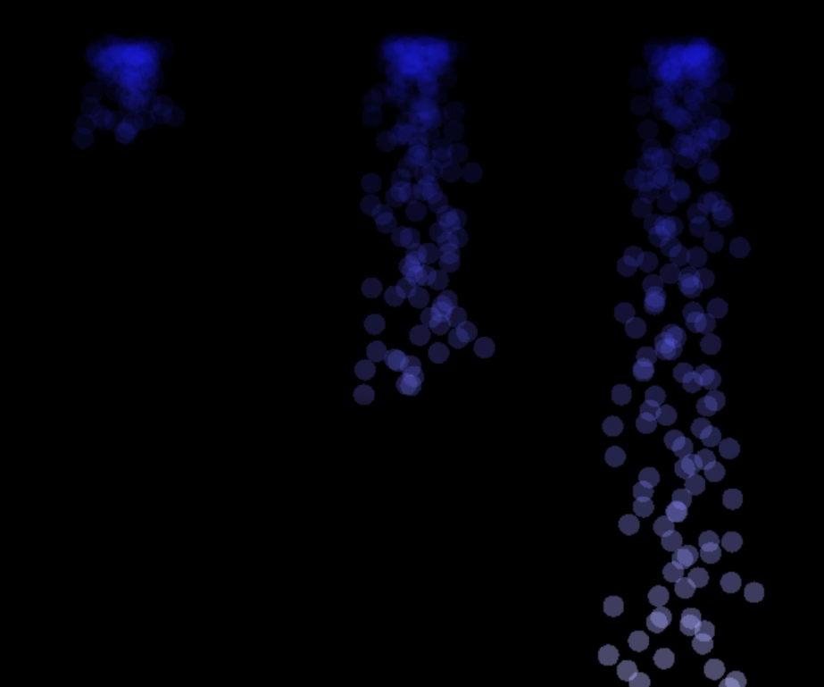
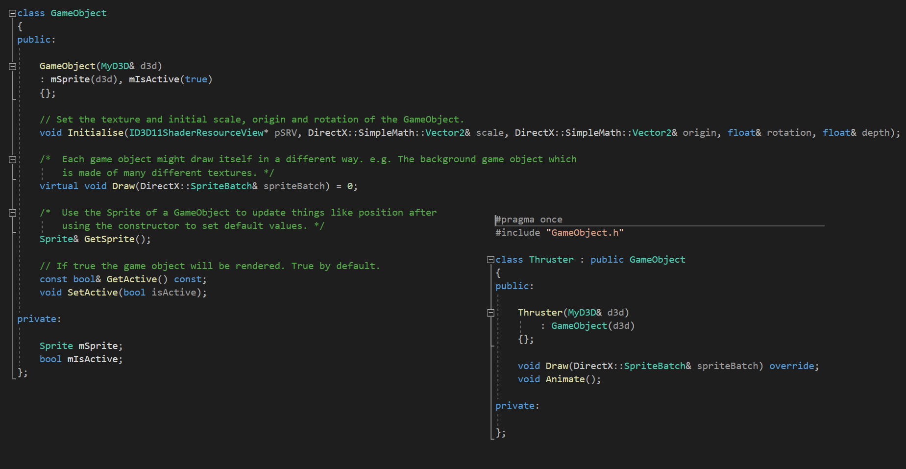
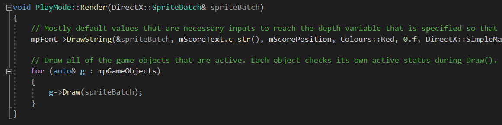
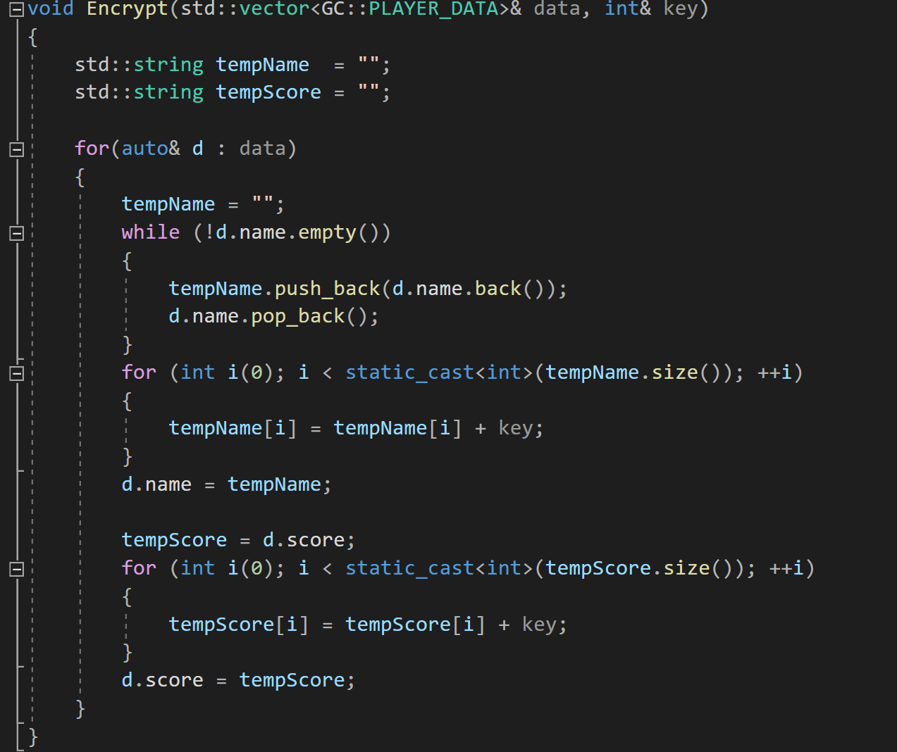
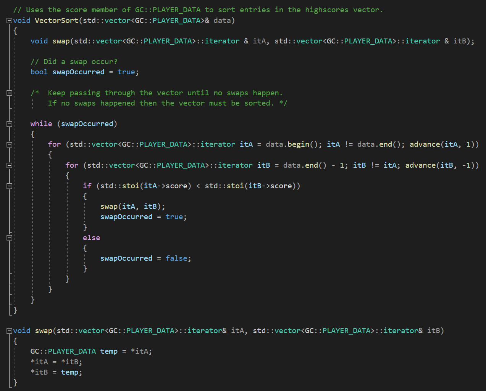
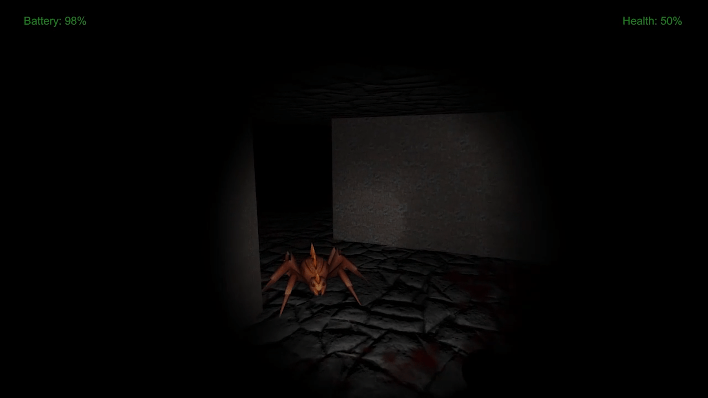
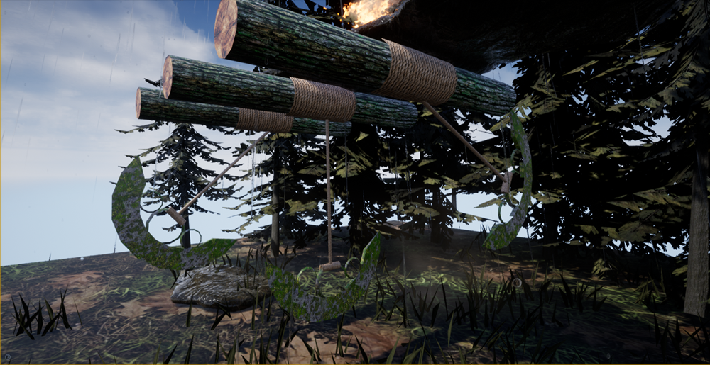

I had the opportunity to participate in the first Festival of Code, an event arranged by the Department of Computing at Sheffield Hallam University. The festival lasts about 6 hours and
much like a game jam, the idea is to create something in a team within the specified time. I paired with my fellow Computer Science for Games student, Jake Powell, and together we developed
the particle system shown on the right.
We developed in C++ and used the Simple and Fast Multimedia Library (SFML) for a quick turnaround. The day was a good exercise for developing my team
working skills, in particular, I became much more familiar with Bitbucket's branching and merging tools. Although we didn't win a prize, we did get an honourable mention and the opportunity
to show our work at the end, which gave us some really good feedback.

The focus of my studies has been C++ and the design patterns therein. Below is a simple side scroller that I completed as part of an exercise in polymorphism. I created a GameObject class
that provided a template for all the drawable objects in the game. This allowed me to introduce a vector of GameObject pointers in my Render() function, simplifying Render() significantly.

Each GameObject checks its own active flag during Draw() to decide whether it should be rendered. This means that inside Render(), the GameObject vector can be iterated over, calling Draw()
on each GameObject without implementing seperate checks in Render() itself, which further simplifies the Render() function.

Various support functions are required in the side scroller, two examples are my simple encryption function, Encrypt(), and my sorting function, VectorSort(). These functions are used to
encrypt the highscore data before it is saved, and to sort the highscore table respectively. VectorSort() contains an additional, minor function, swap() which creates a temporary PLAYER_DATA
struct of my design and uses it to manipulate the values of the std::vector iterators. The function, swap(), is called when the first vector element plus itA, contains a lower score member than
the last element minus itB. Thus, sorting the PLAYER_DATA structs into descending score order.


I also have experience developing my own classes and utility functions that I can reuse. For example, I developed my own Sprite class, shown on the right, in my second year of university, which is used in the side
scroller game above, and will continue to evolve as I continue my course.
I've worked with C# in Unity and as part of a first year university project I created a game that I call, See Gnome Evil! Inspired by Mr X from the Resident Evil series, Gnomeo follows the player through a maze
filled with grotesque creatures. The aim is to get out of the maze without running into any of Gnomeos minions, and before your torch runs out.
I created a death animation using the IEnumerator function shown below to flick the spotlight of the torch on and off at random intervals while lowering the light intensity, and the camera height to zero.

The feedback I received for See Gnome Evil! was very good, in particular, I was praised for changing the mechanics of the game from the shooter base that we were given to a survival horror
game in which the player must evade enemies.

The bulk of my Unreal experience comes form creating this 2.5D game. I called it Super Scary Blades 2.5D because I modelled the blades myself. I'm not an artist but it is
important as programmers to know and respect what we're asking artists to achieve when working on projects. To that end I modelled the blades using 3DS Max; the goal was an
asset that fit the environment, had a low polygon count and had an animation that added to the gameplay.

By offsetting the animation start point and speed I created a deadly assault course for the player to navigate while they solved the fire puzzle. The object of the puzzle is to
light all three fires to trigger a platform that allows the player to escape the level. When lit, each fire would affect which other fires could be lit at the same time
meaning the player has to work out the correct order in which to light the fires.
Legal, social, ethical and professional issues all need to be considered when work begins on a project. IT professionals don't just need technical skills, they also need to understand
their obligations to produce ethical software.
This short piece reflects on the issues encountered by a music selection service; cental to the piece is the law surrounding the profiling
of data within the EU, GDPR, and the copyright issues that arise when training an algorithm to recognise pieces of music. My LSEPI analysis is available
to read here and is a downloadable PDF.